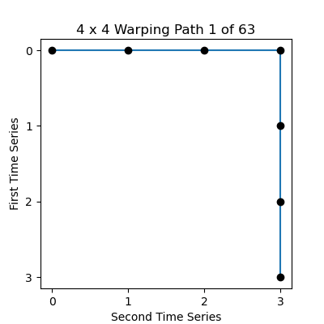
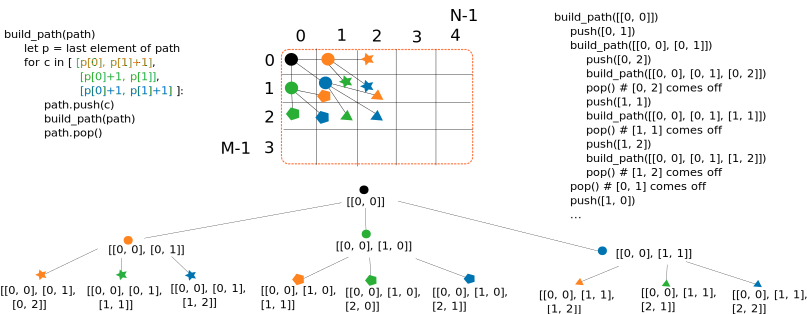

Assignment 3a: Warping Paths And Delannoy Numbers (20 Points)
Chris Tralie
Overview / Logistics
The purpose of this assignment is to give you practice with recursions and stacks working together. Recall that the number of possible warping paths, and the number of possible edit distance solutions, can be counted with Delannoy Numbers. Even though these numbers are huge as the input scales, it is still interesting to examine what all possible warping paths look like for smaller enough M and N. Your task in this individual mini assignment will be to plot all possible warping paths for a particular M and N using recursion.
NOTE: This is a rare case of an individual assignment. Recall that this means that you should not show your code to anyone else in the class as you're doing it, but you can still ask general questions on discord.
Learning Objectives
- Enumerate all possible solutions of dynamic time warping and string edit distance.
- Use recursion and stacks in synergy to explore branching possibilities in solutions.
Programming Task
Click here to download the starter code for this assignment. You will edit warppath.py to recursively fill in a list of all possible warping paths of a particular size. Code has been provided for you to plot all of them. For example, here's where M = 3, N = 5
And here's an example of M = 4, N = 4
If you've done this properly, the code will output these animated gifs to the same folder that you run it. Note also how the number of paths matches the Delannoy Numbers for these M, N pairs, which is another way you will know if your code is working properly.
Programming Tips
All paths start off with [0, 0] and end with [M-1, N-1]. You should use recursive calls to branch off and consider the possible continuous steps [+0, +1], [+1, +0], [+1, +1] to the next pair in the warping path. You may want to refer to the recursive backtracing code for edit distance, which used a stack to help branch off for a bunch of paths. The code here isn't exactly the same, but using push and pop to push on the next element before a recursive call and to pop it off before the next recursive call is the way to go. Recall that you can use a python list as a stack; the push method is append for a list, but pop is still pop. When you finish a path, you can copy it into a list of paths with the copy() method of the python list.
Be careful that you don't run out of bounds, or you may end up with infinite recursion!
The image below shows some pseudocode and a picture depicting how the recursion branches out and grows different paths. The overlapping subproblems are quite visible even after only two branches, which is part of what motivates a dynamic programming solution.

NOTE: You may get the paths in a different order from the animation above, but as long as they are all unique and you have a number of paths equal to the respective Delannoy number, you're good to go. You should also check several examples beyond the ones I've shown above and verify that you get the right number of paths.